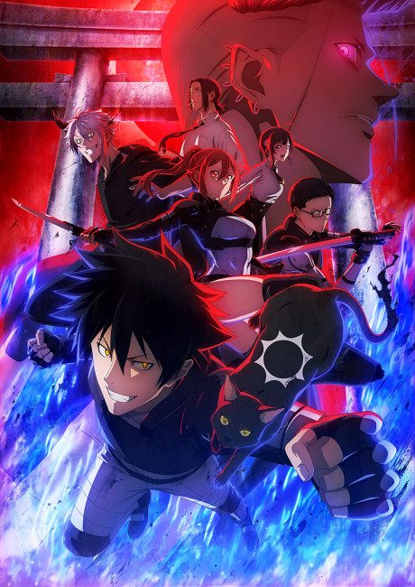
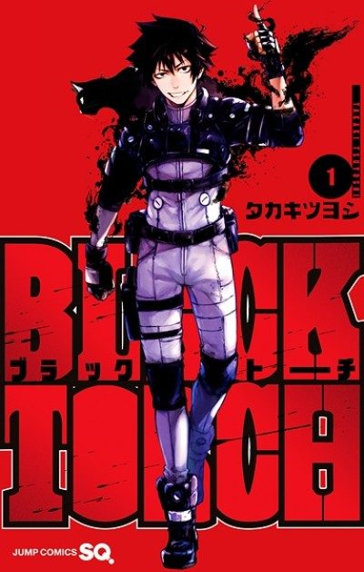
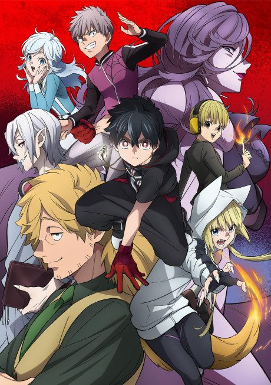

BLACK TORCH
BLACK TORCH
Jirou, a teen trained as a ninja who can talk to animals, rescues an injured black cat that turns out to be a legendary demon.
We haven't found where the anime ends in the manga yet.
6.9AniList score
—Animeter, no votes yet
12episodes
Rate it or report where you stopped
Anime finished. Where does the manga pick up?
StatusNo source yet
We looked for where the anime ends in the manga but found no source we trust yet. The manga is 28 chapters, finished.
More like BLACK TORCH
 Done8.5
Done8.5
 Manga Ch. 3408.9
Manga Ch. 3408.9
 Manga Ch. 1588.2
Manga Ch. 1588.2
 Done7.7
Done7.7
 Done7.3
Done7.3
 Manga Ch. 407.8
Manga Ch. 407.8
 Manga Ch. 347.8
Manga Ch. 347.8

Manga Ch. 227.2 Manga Ch. 1818.4
Manga Ch. 1818.4
 Manga Ch. 1118.0
Manga Ch. 1118.0
 Done9.0
Done9.0
 Manga Ch. 1217.2
Manga Ch. 1217.2